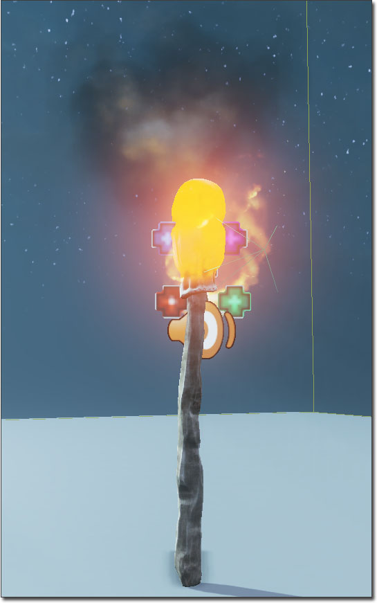
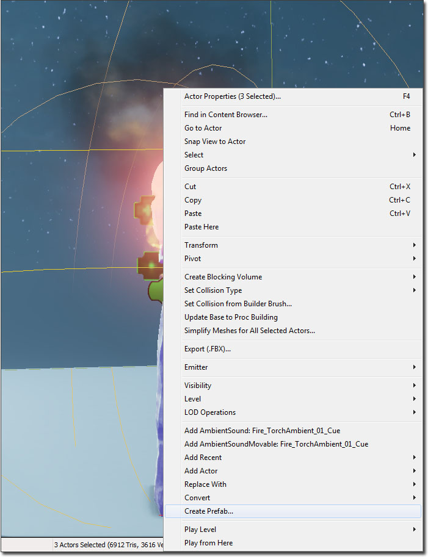
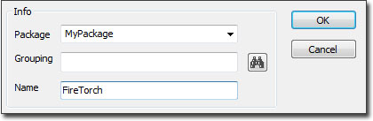
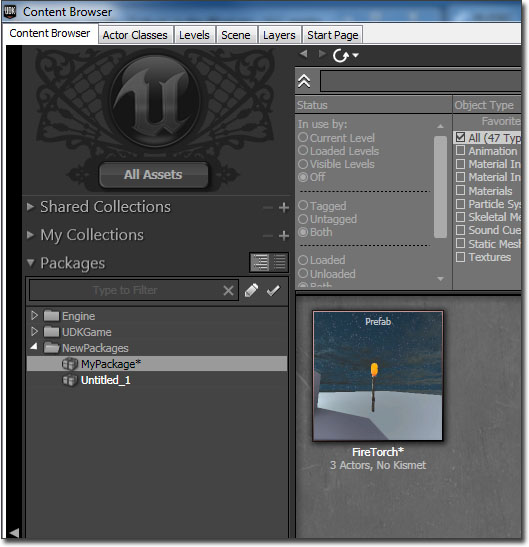
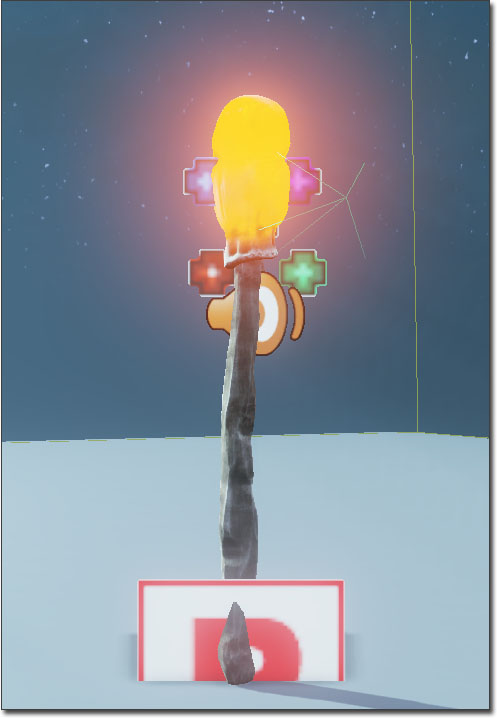
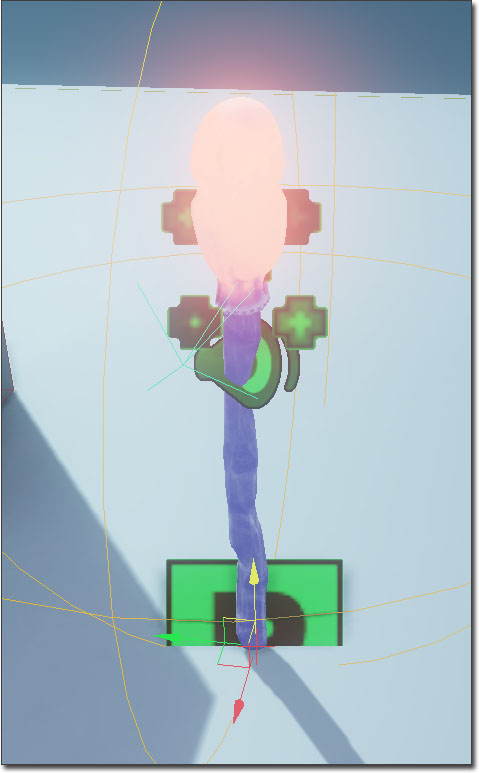
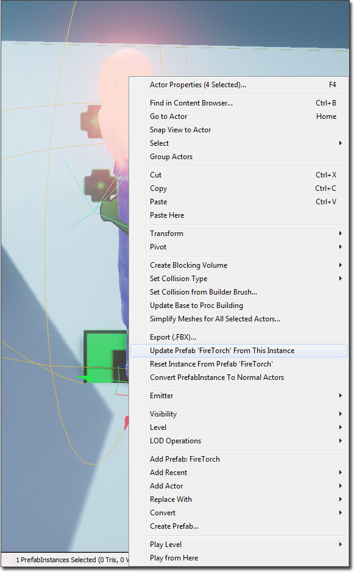

UDN
Search public documentation:
UsingPrefabsCH
English Translation
日本語訳
한국어
Interested in the Unreal Engine?
Visit the Unreal Technology site.
Looking for jobs and company info?
Check out the Epic games site.
Questions about support via UDN?
Contact the UDN Staff
日本語訳
한국어
Interested in the Unreal Engine?
Visit the Unreal Technology site.
Looking for jobs and company info?
Check out the Epic games site.
Questions about support via UDN?
Contact the UDN Staff
使用预制
概述
推荐的工作流程
- 仅用预制作为关卡布置工具
- 这意味着一旦将预制放置到关卡中，应该立即将它转换为直观简单的actors，可以通过右击该预制并选择 Convert PrefabInstance To Normal Actors(转换预制实例为正常Actors) 来完成。
- 避免某些高级功能，包括将actor属性变化传递给已经放置到关卡中的预制实例，及在预制资源中存储Kismet逻辑。
创建预制

然后选中它们，右击并从关联菜单中选择 Create Prefab(创建预制) 。
将会提示您为新的预制输入包名、可选的组名以及新的与新的预制名称。
然后它将询问您是否想使用新预制的实例来替换选中的Actors。新的预制的原点是您选中的最大的Actor的原点。 现在您应该可以在内容浏览器中看到那个新的预制了。预制显示了一个缩略图，展示当您创建它时预制在关卡中显示效果。这个缩略图是在创建预制时从您的透视编辑器视口中相机的位置拍摄的，所以在您创建预制之前使您的物体具有较的视角是值得的。
现在您应该可以在内容浏览器中看到那个新的预制了。预制显示了一个缩略图，展示当您创建它时预制在关卡中显示效果。这个缩略图是在创建预制时从您的透视编辑器视口中相机的位置拍摄的，所以在您创建预制之前使您的物体具有较的视角是值得的。

放置预制实例

这用于告诉人们这个实例所使用的预制，以及哪些Actors是它的组成部分。 当创建一个预制时，在预制中的Actors间的引用将会被正确地保存。所以，如果您把预制中的一个Actor附加到另一个Actor上，当您每次放置预制时，可以正确地处理那个关系。但是，到对于到那个预制 之外 的Actor的引用将会被清除。编辑预制

然而，您有时候却想编辑预制中的特定Actor。要想完成这个处理，您将首先需要从选项中解锁预制。这可以通过打开View（视图）菜单并取消选中 "Lock Prefabs from Selection(从选项中锁定预制)"项来完成。这时，您就可以选择属于那个预置的单独的actors了。
更新预制

重置预制
添加Kismet序列到预制中
 如果您回答 是 ，那么它将执行一次额外的检查，来查看这个序列中是否有到不在这个预制中的Actors的引用。如果是这种情况，那么它将显示一个警告并不把那个序列包含在预制中。
当您把一个包含Kismet序列的预制放置到关卡中时，它将把Kismet序列实例化为一个高层次的称为 Prefabs(预制) 的子序列。关卡中的每个预制实例都具有它自己的相关Kismet序列。当更新预制时，每个实例的Kismet序列将被预制中的那个序列完全地替换，所以不能基于每个实例来自定义Kismet序列。然而，可以基于每个实例来添加输入端、输出端以及变量连接器来自定义预制的Kismet序列。通过这种方式，您可以把功能暴露给设计人员。这个应用的一个实例是门预制，它的序列暴露出输入端来锁上和打开门；并且暴露一个输出端，当每次门被打开时，它将被触发。
如果您回答 是 ，那么它将执行一次额外的检查，来查看这个序列中是否有到不在这个预制中的Actors的引用。如果是这种情况，那么它将显示一个警告并不把那个序列包含在预制中。
当您把一个包含Kismet序列的预制放置到关卡中时，它将把Kismet序列实例化为一个高层次的称为 Prefabs(预制) 的子序列。关卡中的每个预制实例都具有它自己的相关Kismet序列。当更新预制时，每个实例的Kismet序列将被预制中的那个序列完全地替换，所以不能基于每个实例来自定义Kismet序列。然而，可以基于每个实例来添加输入端、输出端以及变量连接器来自定义预制的Kismet序列。通过这种方式，您可以把功能暴露给设计人员。这个应用的一个实例是门预制，它的序列暴露出输入端来锁上和打开门；并且暴露一个输出端，当每次门被打开时，它将被触发。
将预制转换为正常的Actors
预制技巧
- 如果您选择一个属于预制实例一部分的Actor，您可以按下 Shift-P 来选择那个实例中的所有Actors。您也可以通过从关联菜单中选择 Select All Actors In Prefab(s)[选择预制中的所有Actors] 来完成这个目的。
- 如果您选择一个PrefabInstance(预制实例)，您可以选择 Open Sequence For PrefabInstance In Kismet(在Kismet中打开PrefabInstance的序列) ，来打开Kismet并直接跳转到那个实例的子序列。